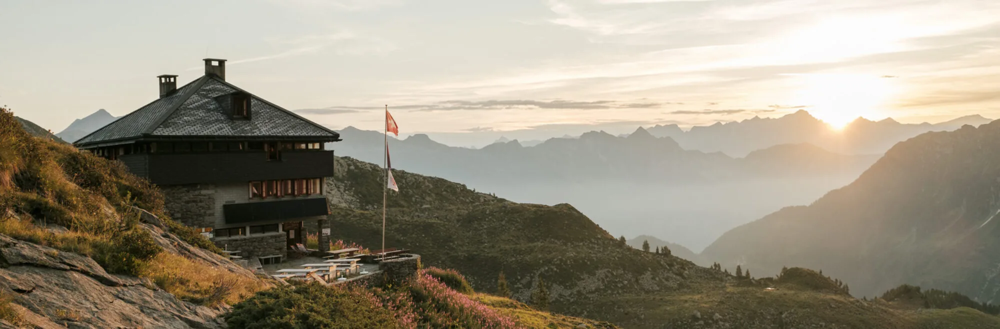

Seit 1886
zu Fuss unterwegs.
Mehr als ein Jahrhundert Besteigungen, Hütten, Rettung und Bergkultur: die Geschichte der Sektion in Etappen.

Die Etappen
Neben den Touren hat die Sektion immer Vorführungen, Vorträge und Diskussionen organisiert und ihr Leben in zahlreichen Publikationen und in den Jahrbüchern festgehalten.
- 1886Am 11. April wird in der Birraria Gambrinus in Bellinzona der Club Alpino Ticinese gegründet, im Jahr des hundertjährigen Jubiläums der Erstbesteigung des Mont Blanc. Erster Präsident ist Rechtsanwalt Curzio Curti. Das Ziel: die Berge des Kantons und der Nachbarregionen besuchen, erforschen und bekannt machen.
- 1887Am 20. März schliesst sich der Club als Tessiner Sektion dem Schweizer Alpen-Club an; Sitz ist Lugano.
- 1911In Lanzo d’Intelvi wird die Sektionsfahne eingeweiht.
- 1913Die Sektion Lugano des Schweizerischen Frauen-Alpen-Clubs wird gegründet, unter dem Vorsitz von Adelina Rossi-Baragiola.
- 1918Die Rettungsstationen von Faido, Airolo und Olivone entstehen. Die Ausbildung der Bergführer liegt bei der Sektion, die Ernennung beim Staatsrat.
- 1930er-JahreDas Felsklettern gewinnt an Bedeutung: Emilio Comici, die Nummer eins des italienischen Alpinismus, wird an die Denti della Vecchia eingeladen. 1932 eröffnen Tita Calvi, Don Giugni und Aldo Balmelli die Nordostwand des Piz Prevat; Bruno Primi «Stüva» wird Bergführer und begeht grosse Klassiker, von der Civetta bis zum Matterhorn.
- 1936Erste Mitglieder im zentralen Himalaya, später folgen Lappland (1959), Huascarán (1977) und Pumori (1978).
- 1940Die Seniorengruppe wird gegründet.
- 1960er-JahreDie Jugendorganisation JO entsteht, und die Rettungskolonne Sottoceneri nimmt ihren Dienst auf. 1963 bringt der Bergsteiger Aldo Fontana neue Impulse; 1964 entsteht die Gruppo Scoiattoli.
- 1980Die Männer- und die Frauensektion schliessen sich zusammen.
- 1982Erste Ausgabe der «Mini-Woche» für die Kleinsten.
- 2003Die neue Capanna Cristallina von Baserga und Mozzetti wird eingeweiht.
- 2016Der Neubau der Capanna Monte Bar ist abgeschlossen.